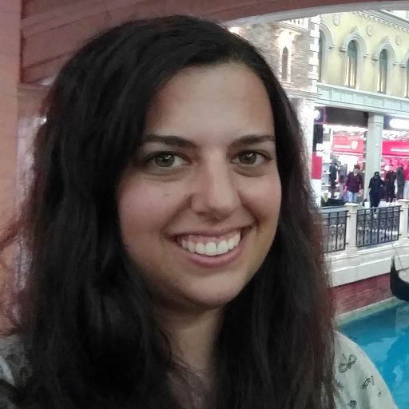

Mission Statement
The Toronto Geometry Colloquium is a live weekly hour-long webseries showcasing geometry processing research. Topics range from computer science, mathematics, and engineering including 3D deep learning, computational fabrication, and computer graphics. The unique format of the Toronto Geometry Colloquium pairs a 10-min opener speaking about a recent work with a 50-min headliner giving a keynote-style address. Part of Toronto Geometry Colloquium's mission is to promote young researchers and showcase great geometry processing research by members of traditionally underrepresented communities. Talks are broadcast live and – unless otherwise noted – recordings are available thereafter.
Upcoming Speakers (google calendar)
-
November 11, 2020, 12:00 PM ET (Live Stream)
Oded Stein, Massachusetts Institute of Technology
We've had Laplacian, yes. What about Bilaplacian?
Astrid Bunge, Bielefeld University
“Polygon Laplacian Made Simple” -
November 18, 2020, 9:00 AM ET
Mirela Ben-Chen, Technion-Israel Institute of Technology
Maps and Connections: The Cheat Sheets of Geometry
Rohan Sawhney, Carnegie Mellon University
“Monte Carlo Geometry Processing” -

November 25, 2020, 1:00 PM ET
Adriana Schulz, University of Washington
Honglin Chen, University of Toronto
“Chordal Decomposition for Spectral Coarsening” -

December 2, 2020, 1:00 PM ET
Vladimir G. Kim, Adobe Research
Thomas Davies, Autodesk & University of Toronto
“Overfit Neural Networks as a Compact Shape Representation” -
December 9, 2020, ACM SIGGRAPH Asia 2020
-
December 16, 2020, 10:00 AM ET
Julie Digne, CNRS
 Michal Edelstein, Technion-Israel Institute of Technology
“ENIGMA: Evolutionary Non-Isometric Geometry MAtching” -
December 23, 2020, 10:00 AM ET
Xiaodong Wei, EPFL
Rosa María Sánchez, King Juan Carlos University
“Robust Eulerian-on-Lagrangian Rods” -
December 30, 2020, Holiday
Past Speakers


How do i find out about new talks?
Join the mailing list to get announcements about newly added talks.
How can i sign up to speak?
University of Toronto Organizational Team
Seungbae Bang
Hsueh-Ti Derek Liu
Silvia Sellán
Advised by Alec Jacobson